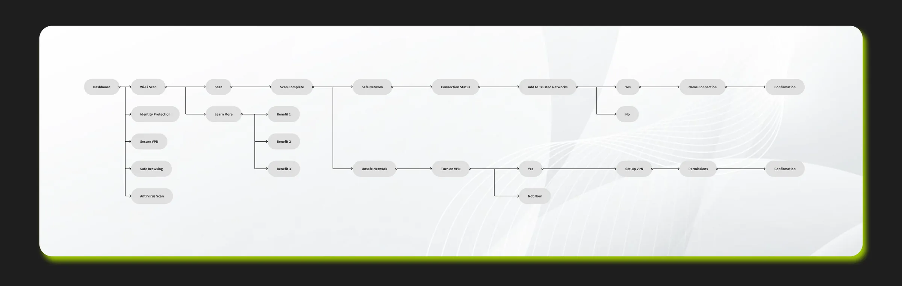
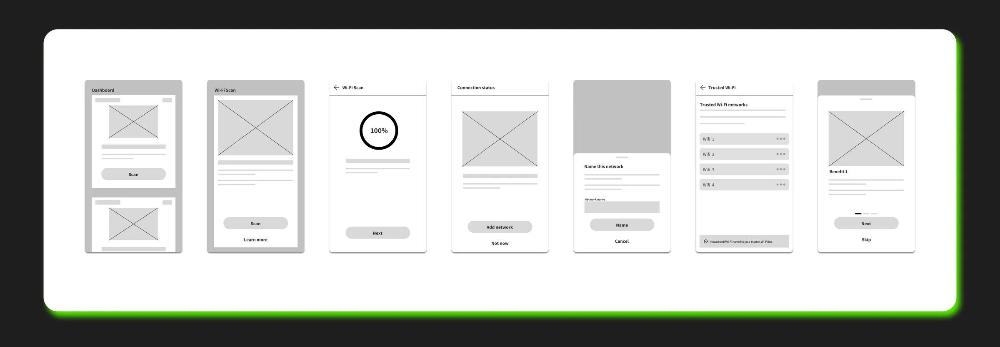
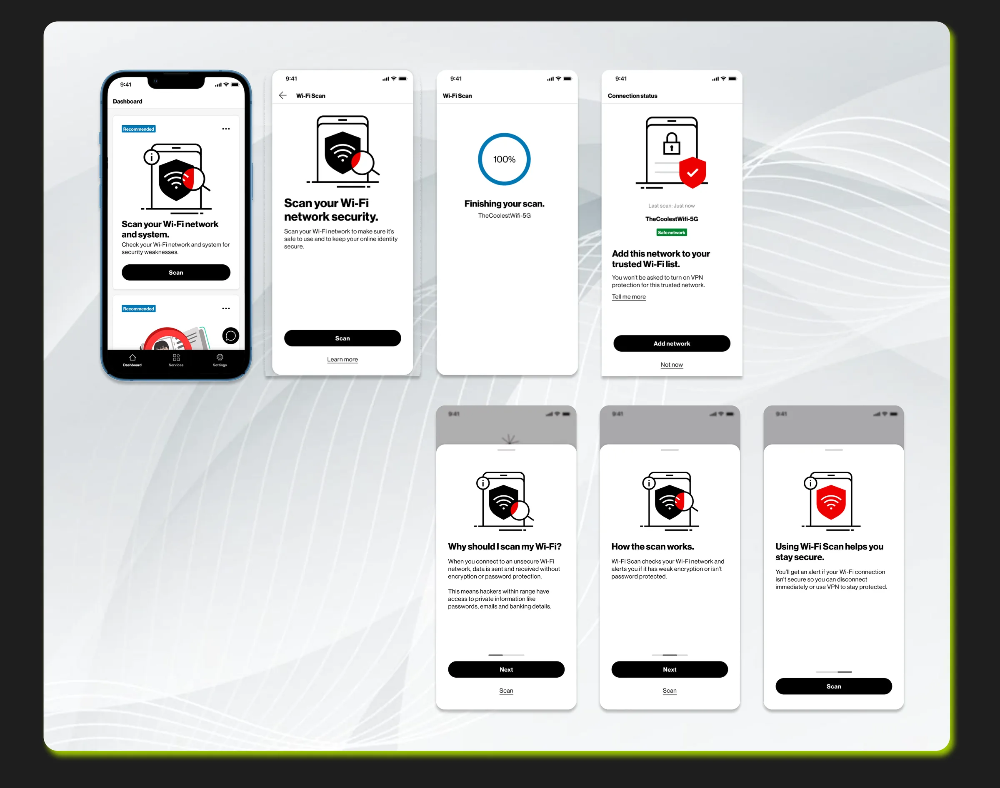

Problem Statement
How might we ensure that the public Wi-Fi internet connection that users connect to is secure and does not compromise their data?
Role & Responsibilities
As the Lead Product Designer, I directed all design initiatives end-to-end — from discovery and strategy through to production and post-launch iterations. I led a small team of designers, established design standards, and collaborated with cross-functional partners to align product vision and delivery.
After the MVP launch, I oversaw multiple enhancement cycles, integrating user feedback and analytics to continuously refine the experience.
User Journey
Based on the business requirements and the requested features, I created the first draft of the user journey, and presented it to stakeholders. After several rounds of iterations with the stakeholders, the user journey was locked in.

Wireframes
Based on the user journey, I created wireframes (Concepts) to explore interaction patterns for network scanning, status indicators, and trusted network management. I met with the front end engineers to consult with them about the wireframes to ensure the designs were feasible to implement.

High-Fidelity Designs
The final high-fidelity designs delivered a polished, intuitive interface that simplified complex security concepts for Verizon customers. I ensured consistency with brand standards while prioritizing clear, actionable feedback during the scanning and connection process.
